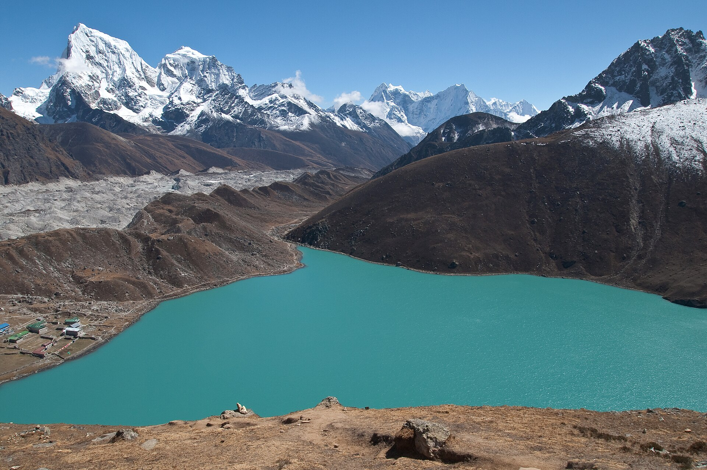
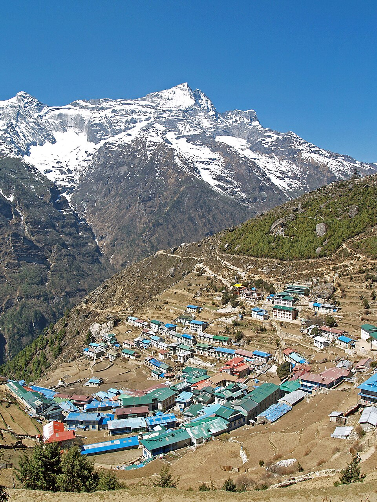
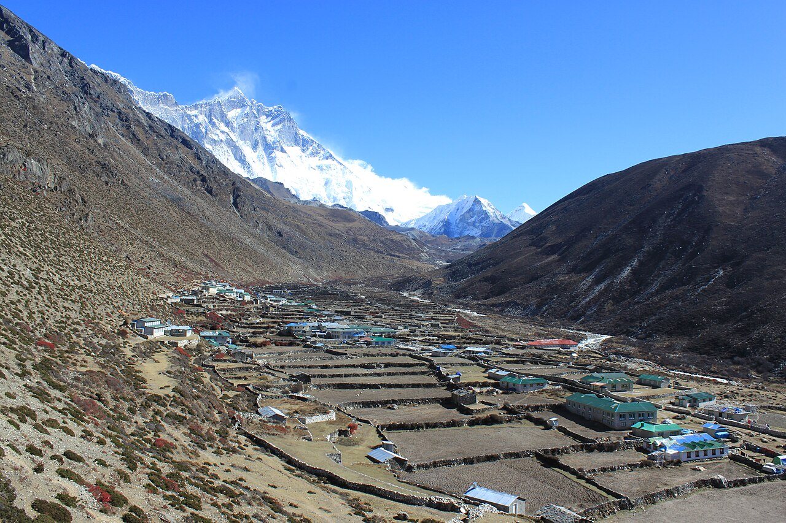

27° N / 86° E THE HIMALAYAS · OCTOBER 2026
A little closer
to the clouds.
Big mountains. A little brother.
Follow Tyler’s journey through the heart of the Himalayas.
Landscape photograph · photo credits
October in the Himalayas
Trek dates: October 7–21, 2026
Waiting for the first hello
Family updates will appear here when shared.
Open field notes01 / THE JOURNEY
Follow the footsteps.
From the foothills to the high passes.
Choose a day. Get a little closer.
15 days, a whole new perspective.
Daily itinerary estimates, not a continuous trail profile. Choose a point to explore that day.
A note on the route +
This journey includes Kongma La and Cho La. The spreadsheet does not include a third pass, so this journal follows the listed route. Tyler’s original plan includes Kala Patthar on October 15; the family version replaces it with a staging day at Dzongla and a shorter next day.
The family notes also suggest skipping Chukhung, returning early via Dingboche, or adding a day at Gokyo. These are options, not confirmed changes. Optional summit detours are included in the approximate map connections. Heights and mileages are the spreadsheet’s estimates, including its unresolved differences from published pass heights.
Have a GPS track? +
Explore an elevation profile from a GPX file with recorded heights. It stays in this browser for this visit and does not change Tyler’s reported location or the published site.
02 / MOMENTS ALONG THE WAY
Big little milestones.
A few stops we’re cheering for.
Stamped only when confirmed.
03 / FIELD NOTES
Postcards from up there.
The next hello comes from the mountains.
Tyler’s photos, check-ins, and little stories will collect here.
For now, explore the places along his planned route below.

THE FOOTHILLSNamche Bazaar
Where the trail finds its rhythm ↗
THE HIGH COUNTRYDingboche
A little room to catch your breath ↗Gokyo Lakes
Some colors you have to see ↗A look ahead: representative landscape photographs, not photos from Tyler’s trip. View credits
Far from home.
Never far from us.